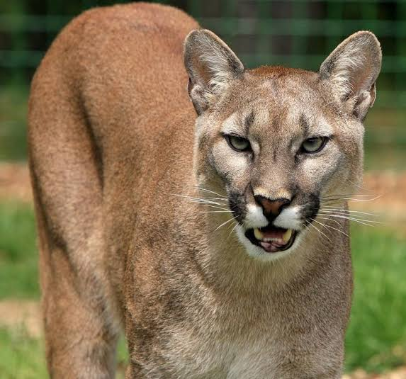

|  |
A onça-parda (português brasileiro) ou puma (português europeu) (nome científico: Puma concolor),
também conhecida no Brasil por suçuarana e leão-baio, é um mamífero carnívoro da família Felidae e gênero Puma,
nativo da América. Foi originalmente classificada no gênero Felis, mas estudos genéticos demonstram que a espécie
evoluiu em uma linhagem próxima à chita (Acinonyx jubatus) e ao gato-mourisco (Puma yagouaroundi). É o mamífero
terrestre com a maior distribuição geográfica no ocidente, ocorrendo desde a Columbia Britânica, no Canadá, até o
extremo sul do Chile, habitando desde florestas densas, até áreas desérticas, com clima tropical ou subártico,
exceto a tundra. É capaz de sobreviver em áreas extremamente alteradas pelo homem, como pastagens e cultivos agrícolas.
É o maior membro da subfamília Felinae, medindo até 155 cm de comprimento, sem a cauda, e pesando até 72 kg, com porte
semelhante ao do leopardo (Panthera pardus), sendo o segundo maior felídeo das Américas. Possui coloração variando do
cinzento ao marrom-avermelhado, com a ponta da cauda de cor preta, áreas laterais do focinho e ventre de cor brancas.
Os filhotes nascem com manchas escuras na pelagem, que geralmente persistem até 14 semanas de idade. Possui as mais longas
patas traseiras dentre os felinos. Vivem em média, entre 7,5 e 9 anos de idade.
É um animal solitário e mais ativo à noite. Alimenta-se predominantemente de cervídeos, mas pode variar a dieta, sendo
considerada um predador oportunista. A presença de outros carnívoros influencia diretamente a escolha das presas e ambientes de caça.
As áreas de vida variam de 50 a 1000 km², com machos sendo territoriais e possuindo grandes áreas se sobrepondo ao de
várias fêmeas. As fêmeas possuem vários estros no ano, possuem uma gestação que dura entre 90 e 96 dias e geralmente nascem entre 3 e 4 filhotes,
a cada 2 anos, aproximadamente.
|